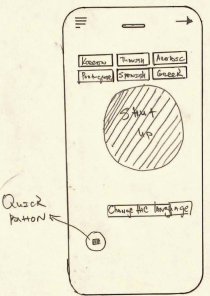
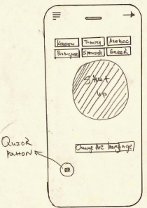

“Shut UP” Mobile App
UX / UI Case Study

Role:
- UX Research
- UX / UI Design
Timeline:
- 6 Weeks Duration
- 15 May, 2023-27
- June 2023
Tools
- Photoshop
- Figma
- InDesign
Overview
The "Shut Up" app is designed designed for busy individuals, who are annoyed by other people and would love to Shut them Up, but instead of saying it they would rather notify them by sound or funny noise. After undergoing testing in 160 languages, this app achieved an astounding success rate. The project was created On Figma, inclusive of User Research and Analysis, Design Experiment, User Flow Map, Cart Sorting, Scenario, User Personas, Interviews of 5 people, Wireframes and low and high-fidelity prototypes in a 6-week sprint. I worked on this real-time project as a part of the BCIT UX/UI Design course.
Empathize
EMPATHIZE
The Problem:
Many of us struggle with maintaining focus throughout the day, whether it's due to noisy neighbors, distracting coworkers, or simply a desire for uninterrupted work time. After conducting extensive research, I discovered a gap in the market for a well-developed "Shut Up" app. While there are a few existing options, they often lack support for multiple languages and comprehensive functionality. This led me to create "Shut Up," my debut mobile application. The aim was to make a fun app with great features for busy people.
I firmly believe that there's a significant demand for a mobile app that empowers users to regain control over their work or study environments by minimizing distractions. "Shut Up" is designed to provide users with a versatile and effective tool to optimize their productivity and enhance their focus.
The Solution:
The “Shut Up” app offers a comprehensive solution for managing interruptions and maintaining focus in today;s fast paced digital world. By empowering users to take control of their distractions and optimize their work or study sessions, the app aim to enhance productivity, reduce stress, and promote a more balanced and fulfilling lifestyle. Moreover we can definitely cut those annoying individuals surrounding us:)
Target Audience:
The primary target audience for the "Shut Up" app includes:
- Professionals and knowledge workers seeking to increase productivity and minimize distractions during work hours.
- Students looking to enhance their concentration and study efficiency.
- Individuals who want to manage interruptions and maintain focus during important tasks or creative endeavors.
Define
Research:
The first thing I focused was my research strategy. To identify the flows in the current UX and UI, I conducted a usability test by interviewing five people that fit my user archetype. My primary user demographic consisted of busy individuals in their mid-thirties seeking an app to silence disruptive individuals.
Secondly, I conducted a competitor analysis. Aside from using and understanding “Shut Up” app, this also gave me an insight in the market space and provided additional context for the problem I am working on. Secondly, I have created an interview guide in preparation of Usability Testing. This enabled me to conduct interviews in a consistent and controlled manner.
Brainstorming:
During the brainstorming phase, I have explored different directions and possibilities of the “Shut Up” app and how the user interface will function. Once I had a clear idea of what I wanted to create, I moved to the user flow mapping stage.
Competative Analysis:
As part of the Competitive Analysis., I conducted an analysis of four different “Shut Up” apps. I focused my research on User Interface elements and User Experience Flows – including the Sign-Up process, Recording stage, User Ratings and the Functionalities & Features. The key findings revealed that competing “Shut Up” aps lacked user- friendliness, had a confusing primary purpose, were not free, lacked focus, and offered fewer language options compared to the one I developed.

Scenario:
Cameron had a long and intense day shooting a movie for 16 hours. She was just so exhausted, so she didn’t want to interact with anyone, at the end of the day. Suddenly, her best friend visited her unexpectedly and started complaining about the date and how she is so disappointed from all guys. Cameron, didn’t want to be rude, but instead of saying it, she pressed the button: Shut Up. Firstly, her friend was shocked, but then she apologized and just left. Sometimes, we just need this type of help to express our feelings & help us to achieve our goals, or just to rest and be in peace when someone is annoying us.
Persona:
To further delve into a specific user of the “Shut Up” mobile app, I created a persona to get to know the users and understand what they want out of their experience. I created an interview guide that allowed me to follow a structured interview processing, ensuring that I cover all functionalities and benefits of the “Shut Up” app. With this guide I conducted 5 user interviews and recorded my findings on a Miro board.

User Story:

Problem Statement:


User Journey:

Hypothesis Statement:

Goal Statement:

Interview Guide:
I conducted interviews with five individuals from diverse demographic backgrounds to gain insights into their usage of the "Shut Up" app. This opportunity allowed me to delve deeper into their preferences and needs, helping shape the app's features and functionalities.
Key findings from the user research include:
- Overwhelming frustration with the need to manually create their schedules.
- Concerns regarding the loss of focus during the day.
- Decreased motivation to work due to frequent interruptions from annoying individuals


Ideate
Flow Map:
During the flow mapping stage, I created diagrams to visualize the steps a user will take to accomplish specific tasks, based on their preference. This step helped me to understand the logical progression of screens and interactions, ensuring that users can navigate through the app efficiently.


Cart Sorting:
Then I continued with card sorting phase. Cart sorting helped me to determine the product’s features and benefits, by explaining the value of the product. I have brainstormed the features and benefits of the app with the needs of the users. The card-sorting process helped me to ensure that the navigation and menu structure aligned with users’ mental models and expectations.
 1.jpg)
Site Map :
Site Map helped to create visual representation of the hierarchy. This hierarchy represents how the user will navigate throughout the site.

Design System:
I came up with a design system to add consistency, structure and communication. I choosed Lora Font typeface as a well-balanced contemporary serif with roots in calligraphy. The color palette, I have selected vibrant yellow and dynamic red. Yellow embodies positivity, warmth, and energy, while red symbolizes passion, urgency, and excitement. Yellow has been my primary choice, as it’s evoking the emotional response for the app.


Prototype
Sketch:
The next steps were to do a lo-fi sketch using new user-flow I created. Here quickly I incorporated my brainstorming ideas into rough sketches and outlined the different “Shut Up” screens.
_Page_1.jpg)
_Page_3.jpg)

_Page_4.jpg)


_Page_2.jpg)
_Page_5.jpg) 



Lo -Fi Wireframing:
The next steps were to do a lo-fi sketch using new user-flow I created. Here quickly I incorporated my brainstorming ideas into rough sketches and outlined the different “Shut Up” screens.

Hi -Fi Wireframing:
I integrated all the elements from the entire design process to craft an app that exudes warmth, functionality, and approachability. My primary tool for this project was Figma, which I utilized extensively for both creating and collaborating on the user interface design of the "Shut Up" app. In the final stages, I conducted user tests using prototypes through InVision and Figma to gather feedback. Thankfully, the seamless performance of the app meant that no further modifications were necessary.

VALIDATE
I conducted tests with "Shut Up" involving five users who experienced genuine enjoyment while exploring the mobile app's features. Following these tests, I made enhancements to the Whitelist and Blacklist dropdown functionality, enabling users to swiftly select the most distracting individuals. This improvement in app usability has resulted in users achieving better focus and significantly boosting their daily productivity.
FINAL THOUGHTS:
In summary, the "Shut Up" app has shown great promise in my user testing. Users not only found it enjoyable but also experienced increased productivity and focus after using the app's enhanced features, particularly the Whitelist and Blacklist functionality. As I continue to refine and develop this app, it holds the potential to be a valuable tool for helping individuals manage distractions and improve their daily work performance. Further user feedback and fine-tuning will be essential in ensuring its continued success.